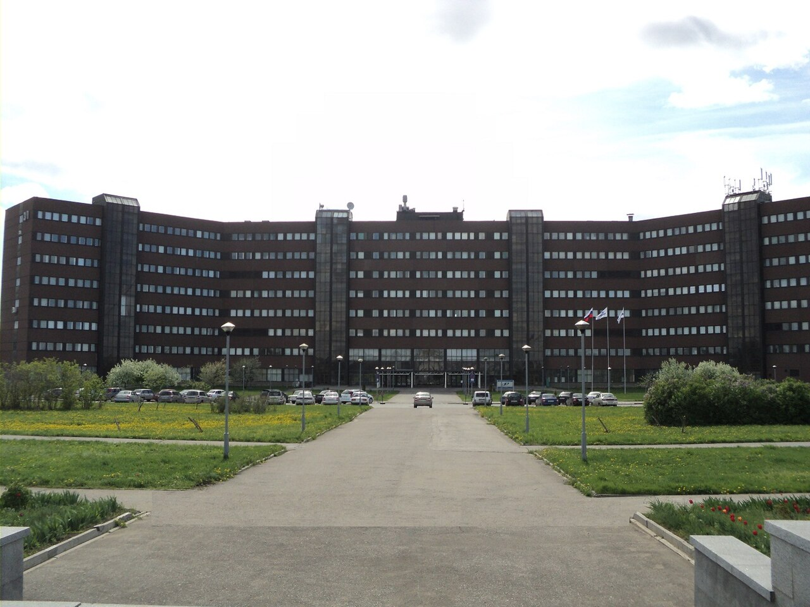
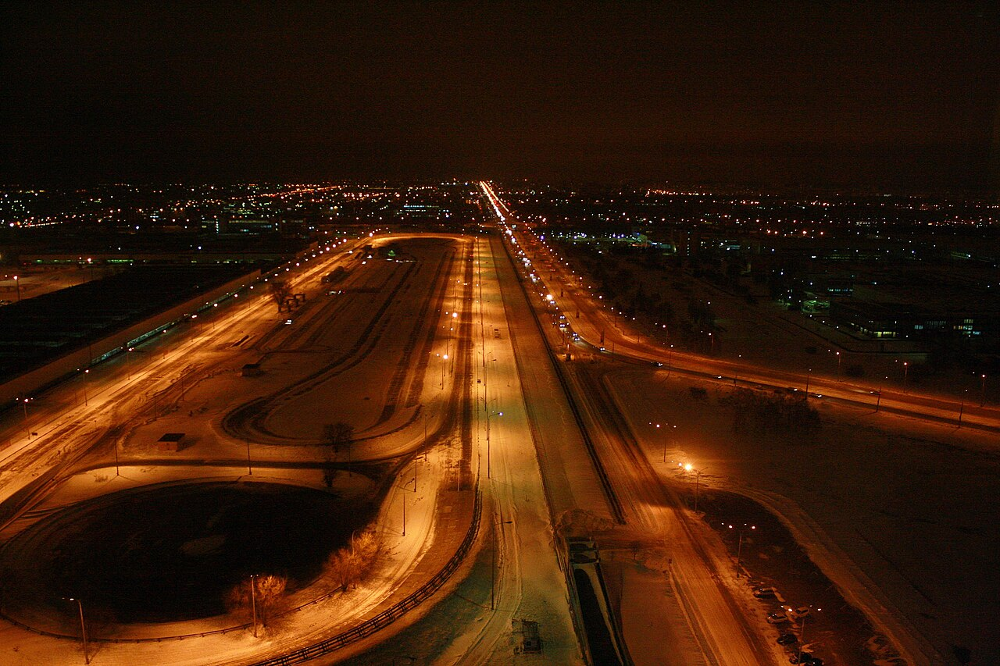
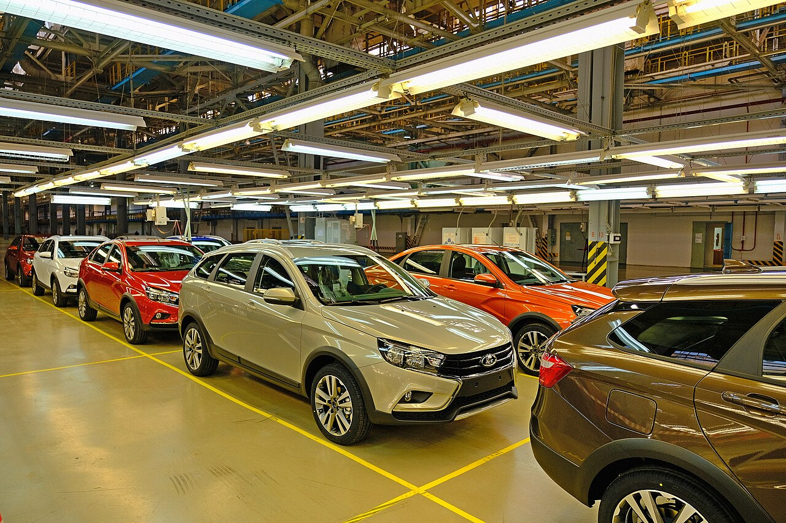

Основные производства
С 1966 по 1991 в состав «Волжского объединения по производству легковых автомобилей» входили 5 (пять) производств:
После развала СССР в результате приватизации значительное число предприятий стали акционерными обществами и перешли к разным собственникам. В настоящее время указанные заводы продолжают поставлять свою продукцию как на «АвтоВАЗ», так и на другие автозаводы России.
«АвтоВАЗ» совместно с «General Motors» и Европейским банком реконструкции и развития принял участие в создании совместного предприятия «GM-АвтоВАЗ». Совместное производство началось с выпуска внедорожника «Chevrolet Niva» («Шевроле Нива»). На рубеже 2019-2020гг «АвтоВАЗ» выкупил 50 % в совместном предприятии с «General Motors», и Niva начала выпускаться и продаваться под брендом Lada, без символики Chevrolet.
C 2015 года Роснефть по заказу «АвтоВАЗ» выпускает моторное масло Ultra и Professional под маркой LADA.
На территории предприятия имеется вертолётная площадка, которая регулярно использовалась до распада СССР для перевозки вертолётами грузов и руководителей завода. Вертолётные площадки имеются только в пяти населённых пунктах Самарской области: в Курумоче (аэропорт), Смышляевке (аэропорт), Волжском Утёсе (резиденция Президента), Самаре и Тольятти.
Сотрудникам, проработавшим на заводе более 20 лет — присваивается звание «Ветеран Волжского автомобильного завода» со вручением соответствующего удостоверения. Существуют значки «Ветеран АвтоВАЗа» (отличающиеся логотипом завода), а также одноимённая медаль. Этого звания удостаивались также люди, не являвшиеся сотрудником завода. В частности, это звание получил А. Я. Бродский (1931—2009) — спецкор «За рулём», автор первой публикации в журнале о строящемся в Тольятти автогиганте.
Научно-технический центр
Здание Научно-технического центра «АвтоВАЗ»

Вид на испытательный трек с 24-го этажа заводоуправления

8 апреля 1986 года состоялся визит М. С. Горбачёва в Тольятти, где Генеральный секретарь ЦК КПСС посетил автозавод. Результатом визита было решение о создании на базе флагмана отечественного машиностроения инжинирингового центра.
4 сентября 1986 года Правительством страны принято решение о создании на автозаводе отраслевого научно-технического центра (НТЦ). В 1987—1994 годах введены в строй его основные мощности: инженерный корпус, дизайн-центр, комплекс подготовки автомобилей к испытаниям, комплекс исследований электромагнитной совместимости, шумов и вибраций, аэроклиматический комплекс, корпуса опытно-промышленного и экспериментального производств. В 1996 году в НТЦ была принята в эксплуатацию полномасштабная аэродинамическая труба.
Первым руководителем научно-технического центра был В. В. Каданников (в 1986—1988 годах). На этом посту его сменил Владимир Михайлович Акоев, который пробыл на этой должности менее года (погиб во время автокатастрофы в июне 1989 года).
7 сентября 2001 года, в честь 15-летия научно-технического центра, открыта первая очередь технического музея. Сегодня это — целый парк автомобильной и военной техники, где собраны уникальные экспонаты со всей страны.
После вхождения в число акционеров ОАО «АвтоВАЗ» французской компании Renault принято решение о вхождении научно-технического центра завода в состав глобального инженерного альянса Renault-Nissan.
Показатели деятельности
Автомобили Lada Vesta Выпущенные на заводе ИжАвто

Предприятие ориентировано на внутренний рынок, где является абсолютным лидером по продажам, и на страны СНГ. В 2004 году завод выпустил чуть более 712 тысяч, в 2005 году — 721,5 тысяч автомобилей. В 2006 году выпущено 966 380 автомобилей и автокомплектов, продано 724 тыс. готовых автомобилей, в том числе 185 673 автомобилей и сборочных комплектов на экспорт. В 2007 году продано (по данным компании) 770 тысяч авто.
В 2008 году компания планировала выпустить 959,7 тыс. автомобилей и сборочных комплектов, в том числе 125 тыс. автомобилей Lada Kalina, более 210 тыс. автомобилей модели Lada Samara, 35 тыс. трёхдверных внедорожников Lada 4х4 и 8 тыс. автомобилей «Lada 112 Coupe». Экспорт автомобилей и автокомплектов в 2008 году предполагалось увеличить до 194 тыс. единиц. В результате заводом было произведено 810,5 тыс. автомобилей, а продажи в России составили 622,1 тыс. авто. Выручка компании по МСФО составила 192,07 млрд руб. (в 2007 году — 187,6 млрд руб.), чистый убыток — 24,66 млрд руб. (в 2007 году — чистая прибыль 3,7 млрд руб.).
В 2010 году компания выпустила 545,5 тыс. автомобилей, увеличив объём производства по сравнению с 2009 годом на 85 %. В России было продано 517,1 тыс. автомобилей Lada (а учётом экспорта — 557,8 тыс. авто). По сравнению с 2009 годом реализация Lada в России выросла на 48 %. Этому росту способствовала государственная программа утилизации вышедших из эксплуатации транспортных средств. Владельцы старых автомобилей активно сдавали их на переработку, получая скидку на приобретение новой машины. Самыми продаваемыми моделями в этот год стали Lada 2105 и Lada 2107: 136 тыс. автомобилей. Второй показатель оказался у Lada Priora — 125,5 тыс. машин. Продажи Lada Kalina составили 108,9 тыс. автомобилей. В I квартале 2010 года убыток «АвтоВАЗа» составил 2,6 млрд рублей, во II квартале чистая прибыль по РСБУ составила 1 млрд рублей. Объём продаж АвтоВАЗа во II квартале повысился в два раза по сравнению с I кварталом.
С 2011 года, после приобретения ООО «ОАГ», «АвтоВАЗ» начал учитывать в своих производственных показателях продукцию Ижевского автозавода, который стал дочерней площадкой компании. В этом году обоими предприятиями выпущено 593,3 тысячи автомобилей. Продажи завода по сравнению с прошлым годом возросли на 10,6 % — до 578,3 тыс. авто (с учётом экспорта — до 634,3 тыс. авто). В том же году АвтоВАЗ подготовил производство и начал выпуск новой модели — седана Lada Granta.
В 2012 году «АвтоВАЗ» и Ижевский автозавод выпустили 587,6 тысячи автомобилей. По мнению экспертов, сокращение производства автомобилей Lada было вполне закономерно и ожидаемо и связано в первую очередь с тем, что компания проводила смену модельного ряда. Также снижение было отчасти обусловлено прекращением программ государственной поддержки, в частности, программы утилизации автомобилей. Продажи на российском рынке в этом году составили 537,6 тыс. авто, а с учётом экспорта 608,2 тыс. В апреле 2012 года на «АвтоВАЗ» начался выпуск универсалов Lada Largus — автомобилей, созданных на платформе В0, предоставленной Альянсом Renault-Nissan.
По итогам 2013 года предприятием и его площадкой в Ижевске было выпущено 516,3 тысячи автомобилей. В этом периоде завод показал спад продаж и производства. По мнению экспертов, «продажам не способствовала общая экономическая ситуация в стране и пессимистичные прогнозы макроэкономики. Это ограничивало желание потенциальных покупателей в приобретении дорогостоящих товаров». Общее количество проданных автомобилей в России за этот период — 456,3 тыс. машин, а включая экспорт — 534,9 тыс. автомобилей Lada. В том же году «АвтоВАЗ» продолжил модернизацию мощностей и обновление модельного ряда, начав выпуск автомобилей Lada Kalina нового поколения.
В 2014 году «АвтоВАЗ» произвёл 575,1 тысячи автомобилей и сборочных комплектов. Продажи автомобилей марки Lada составили 439,1 тысячи штук. За всю историю завода произведено более 28 млн автомобилей. Около 57 % автопарка России — автомобили марки ВАЗ.
В 2015 году «АвтоВАЗ» показал отрицательную валовую маржу в отчётности по МСФО. Аналитики указывают на рост стоимости компонентов и девальвацию рубля как причины убыточности компании. Убытки от обесценения и затраты на реструктуризацию составили 42 млрд руб. в 2015 году против 4,7 млрд руб. в 2014 году. Чистый убыток составил 73,9 млрд руб. против 25 млрд руб. убытка в 2014 году.
В 2018 году чистая прибыль составила 5,86 млрд руб. против убытка в 2017 году, общая выручка 283,1 млрд руб.
За 2023 год АвтоВАЗ выпустил 374 077 автомобилей — в 1,5 раза больше чем в 2022, Доля рынка АвтоВАЗа в России составила 35 %. Продажи достигли 353 572 автомобилей — почти в два раза больше 2022 года. Больше всего было продано машин Lada Granta — 206 116, Niva — 92 003 и Vesta — 49 272. Экспорт предприятия в восемь стран составил около 6500 автомобилей.
Статистика производства автомобилей (в шт.):
1991 - 674 884, 1992 - 673 821, 1993 - 656 403, 1994 - 529 403, 1995 - 607 091, 1996 - 679 570, 1997 - 740 526, 1998 - 542 522, 1999 - 677 087, 2000 - 706 377, 2001 - 767 300, 2002 - 702 963, 2003 - 699 899, 2004 - 712 000, 2005 - 721 500, 2006 - 724 000, 2007 - 770 000, 2008 - 810 563, 2009 - 294 737, 2010 - 545 450, 2011 - 593 296, 2012 - 587 610, 2013 - 516 331, 2014 - 575 100, 2015 - 352 000, 2016 - 408 000, 2017 - 485 461, 2018 - 560 650, 2019 - 541 000, 2020 - 457 412
|
Наименование |
Деятельность |
Доля |
|
ООО «Лада Ижевский автомобильный завод» |
Бывшее предприятие «ИжАвто» |
100 % |
|
ООО «Лада Запад Тольятти» |
Бывшее предприятие «GM-АвтоВАЗ» |
100 % |
|
ООО «Лада Медиа» — «Тольятти 24» |
Телерадиокомпания городского округа Тольятти (с 2015 г продано 80 % ГУБЕРНИЯ ТВ) |
20 % |
|
ООО «Лада инструмент» |
Инструментальное производство |
100 % |
|
АО «Лада-Имидж» |
Официальный дистрибьютор по продаже автозапчастей |
100 % |
|
АО «Лада Сервис» |
Дилерская сеть LADA, объединяет 140 дочерних региональных компаний |
100 % |
|
АО «ВАЗсистем» |
Компьютерное программное обеспечение |
100 % |
|
ООО «Двор печатный АвтоВАЗ» |
Типография |
100 % |
|
АНО «Планета детства Лада» |
Детские сады (с 2010 года 50 % на балансе мэрии Тольятти) |
50 % |
|
АО «ПСА ВИС-АВТО» |
Производство спецавтомобилей |
100 % |
|
ПАО «АвтоВАЗтранс» |
Автотранспортное предприятие |
100 % |
|
ООО «Соцкультбыт-АвтоВАЗ» |
Базы отдыха |
100 % |
|
ООО «LADA Sport» |
Производство спортивных автомобилей LADA |
100 % |
|
«Авто финанс банк» |
Ранее — «РН банк», ранее — российский банк альянса Renault-Nissan |
100 % |
Ранее в составе предприятия были энергоснабжающие организации Автозаводского района ОАО «Тевис», ОАО «Электросеть» и ОАО ТЭК; в 2010 году переданы в дочерние организации Ростех. Дочернее предприятие АвтоВАЗагрегат передано частной компании. Организация по обслуживанию лифтового хозяйства района города ПАО «Лифтэлектросервис» и спортивно-культурные объекты ДКИТ, дворец спорта «Волгарь», Торпедо переданы в муниципалитет городской администрации. ТЭЦ Волжского автозавода выведена в энергетический холдинг «Т Плюс». Строительные компании АО ФСК «Лада Дом», ОАО «Спецстрой ВАЗа», ОАО «Автозаводстрой» и Автовазбанк были приватизированы в частную собственность. Медицинские объекты социальной инфраструктуры санаторий «Прилесье» и медсанчасть ВАЗа переданы в ФМБА России. Упразднён «Комбинат общественного питания» КОП-ВАЗа; имущество и сектор общественного питания передан частной ООО «КорпусГрупп». Упразднён заводской ВОХР; охрана передана частной самарской охранной организации ООО ЧОО «Авангард». Рабочие общежития приватизированы и вместе с этим упразднено жилищно-коммунальное управление ЖКУ ВАЗа, упразднена Дирекция по капитальному строительству Управления капитального строительства промышленных зданий и сооружений «ПромУКС». В 2011 году производство технологического оборудования (ПТО ВАЗа) выведено в дочернее общество ООО «Волжский механический завод»; 2016 году организация ликвидирована, на его месте создан «Индустриальный парк АвтоВАЗ», площади которого сдаются в аренду.
В 2004 году под контроль группы СОК перешло дочернее транспортное предприятие ОАО «АвтоВАЗТранс» (АВТ) из которой были выведены: дорожное производство, речной порт и завод переработки бытовых отходов, в отдельные юридические лица: ОАО «Завод по переработке бытовых отходов в отдельное» (ЗПБО). Дорожная служба в ООО «АВТ Дорстрой». В 2017 году дорожное предприятие ООО «АВТ Дорстрой» ликвидировано, имущество банком распродано. Завод ОАО ЗПБО законсервирован. Речной порт продан ГК «Татищев», которая вместе с портом в 2012 году прекратила существование.
В июне 2023 года «Автоваз» завершил приобретение «РН банка» — российского банка альянса Renault-Nissan. Детали сделки не раскрываются.